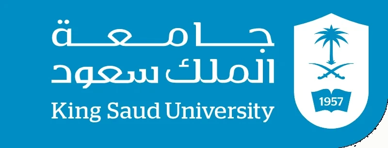
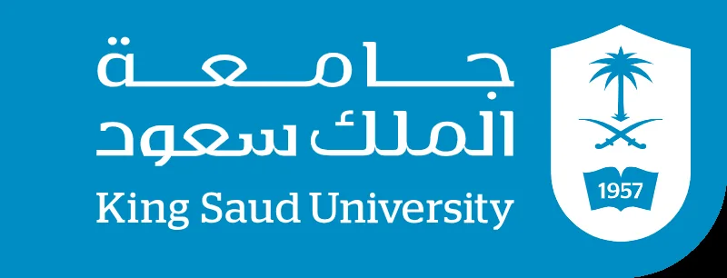
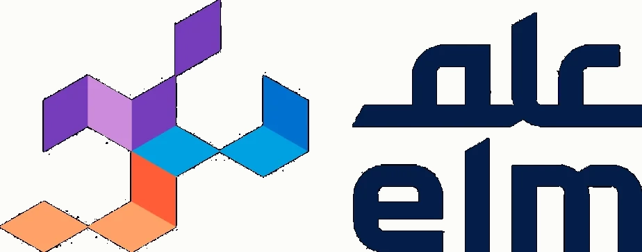
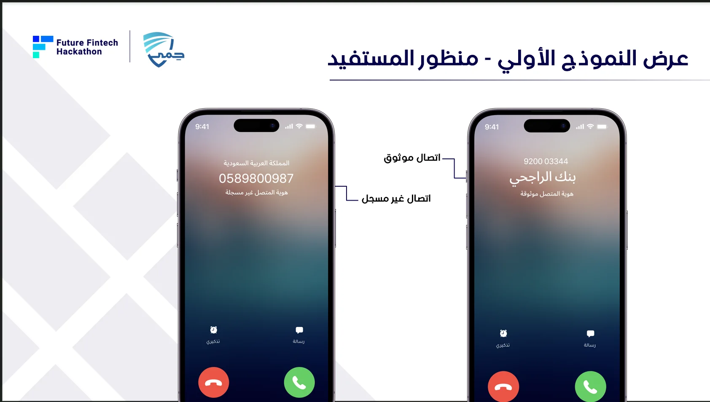
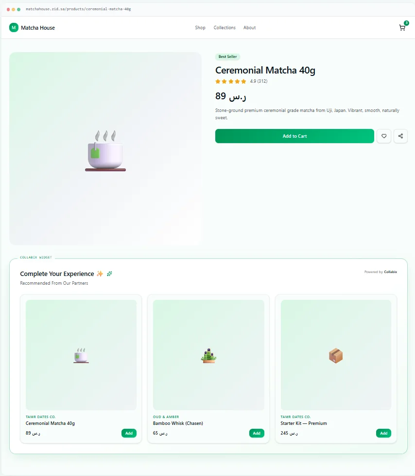

PORTFOLIO · 2026
Maram
Alhassan.
Senior Computer Science Student

AI · Software Development · Technology Projects
BASED IN
Riyadh,
Saudi Arabia UNIVERSITY King Saud
University
Saudi Arabia UNIVERSITY King Saud
University
SELECTED PROJECTS

SANAD | سند
Arabic-Centered AI Wellness Platform
An academic well-being platform featuring an AI chat assistant and stress-level assessment.
My role: Requirements analysis, UX design, and development of the system concept.


ComplyAI
AI Assistant for Regulatory Compliance
3rd Place · Elm Consultant Hackathon
Analyzes compliance documents, maps evidence to regulatory controls, and identifies compliance gaps.
My role: Contributed to developing the solution and its prototype.
View Project ↗

HIMA | حِمى
Trusted Caller Verification
3rd Place · Future Fintech Hackathon
A fintech solution designed to reduce bank-call fraud by distinguishing verified calls from unregistered numbers.
My role: Contributed to developing the solution and its prototype.
View Prototype ↗

Collabix
Devs Sandbox
A platform concept helping Zid merchants discover collaboration opportunities through AI-assisted matching.
My role: Worked on the solution concept and prototype.
View Project ↗